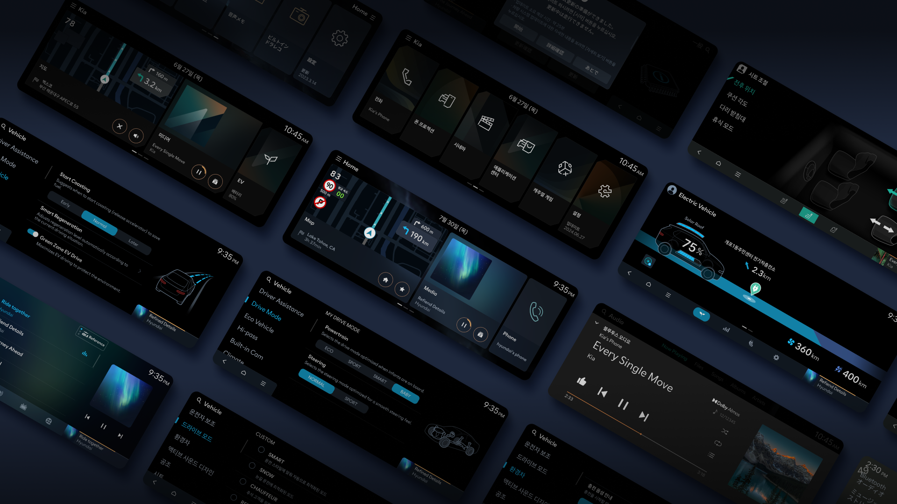

Overview프로젝트 개요
Maintained GUI resources for Hyundai Mobis's CCNC (Connected Car Navigation & Control) IVI system — working entirely within a Photoshop and PowerPoint-based workflow, where brand consistency had to be upheld manually across every file. 피그마 없이 포토샵과 PPT만으로 현대모비스 차량용 인포테인먼트 시스템의 GUI 리소스를 유지보수했습니다. 모든 작업에서 브랜드 일관성을 수작업으로 지켜내야 하는 환경이었습니다.
What Made This Challenging이 프로젝트가 까다로웠던 이유
There was no design system, no component library, and no automated way to check consistency. Every spacing value, font size, color code, and graphic composite had to be verified manually — file by file, screen by screen — against the brand guideline. 디자인 시스템도, 컴포넌트 라이브러리도 없는 환경이었습니다. 수백 개의 PSD 파일에서 간격, 폰트 크기, 색상 코드, 그래픽 합성 등을 브랜드 가이드와 일일이 대조하며 검수해야 했습니다.
Outcome성과
×2
Follow-up contracts secured based on delivery quality 납품 품질을 인정받아 추가 계약 2건 수주
100%
Guideline-compliant resources delivered on schedule 일정 내 가이드라인 준수 리소스 전량 납품
How I Approached It나의 접근 방식
Rather than accepting errors as inevitable in a manual workflow, I analyzed which types of mistakes were recurring — spacing inconsistencies, font mismatches, alignment shifts, graphic compositing errors — and built a self-review checklist based on those patterns. I shared it with team members so everyone could catch issues before delivery, not after. 수작업 환경에서 실수를 당연한 것으로 받아들이는 대신, 반복되는 오류 유형(간격, 폰트, 정렬, 그래픽 합성 등)을 분석하여 셀프 체크리스트를 직접 만들었습니다. 이를 팀원들과 공유해 납품 전에 모두가 스스로 검수할 수 있는 기준을 만들었습니다.

What I Learned회고
Good design isn't only about the output — it's about building the conditions for quality. In a constrained environment, I learned that process design is design. 좋은 디자인은 결과물만이 아닙니다. 품질이 나올 수 있는 환경을 만드는 것 자체가 디자인임을 이 프로젝트에서 배웠습니다.